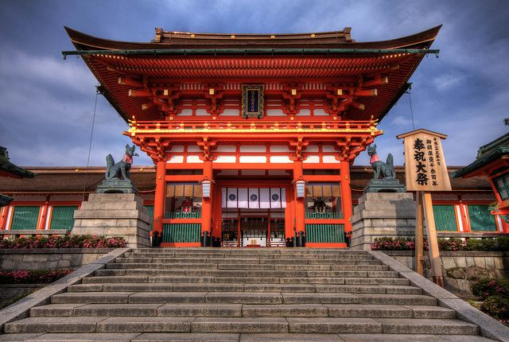
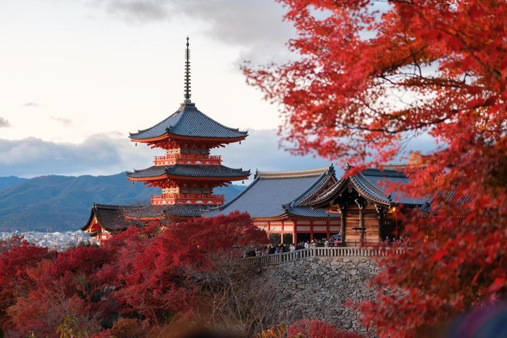
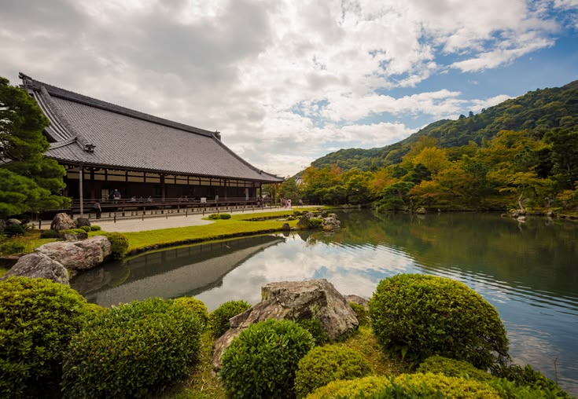

Floresta de Bambus de Arayashima
Venha conhecer essa encantadora floresta em Arayashima!

Santuário Fushimi Inari
Não apenas um, mas um conjunto de santuários na montanha Inari!

Rio Kamogawa
Nada mais típico de Kyoto do que se sentar às margens do Rio Kamo!
Melhores lugares e atrações em Kyoto, no Japão.
Conheça os destinos de sua próxima viagem!

Templo das Águas Kyomizu-dera
Mais visitadoO impressionante templo budista Kiyomizu-dera, não pode ficar de fora de um roteiro em Kyoto.

Templo Tenryu-ji
Mais visitadoUm maravilhoso templo próximo à floresta de bambus.

Santuário de Yasaka
Mais visitadoYasaka Jinja é um santuário xintoísta localizado no coração de Kyoto.
Perguntas Frequentes
A primavera (março a maio) e o outono (setembro a novembro) são períodos muito procurados, devido às flores de cerejeira e às folhas coloridas do outono. Essas épocas também costumam ter temperaturas mais agradáveis. Porém, são períodos de maior movimento turístico.
Para viajar a turismo para Kyoto, brasileiros precisam de passaporte válido. Atualmente, brasileiros podem entrar no Japão sem visto para estadias de curta duração, de até 90 dias, para turismo.
A moeda oficial é o iene japonês. Cartões de crédito são aceitos em muitos hotéis, restaurantes e lojas, principalmente nas áreas urbanas. Mesmo assim, é recomendado levar um pouco de dinheiro em espécie, pois alguns estabelecimentos ainda aceitam apenas dinheiro.
Pronto para viajar?
Kyoto está a seu aguardo!